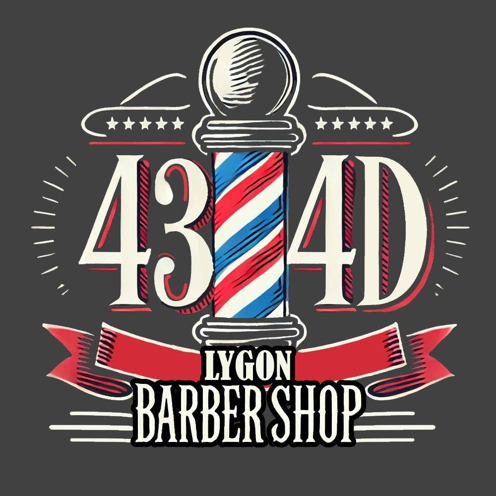
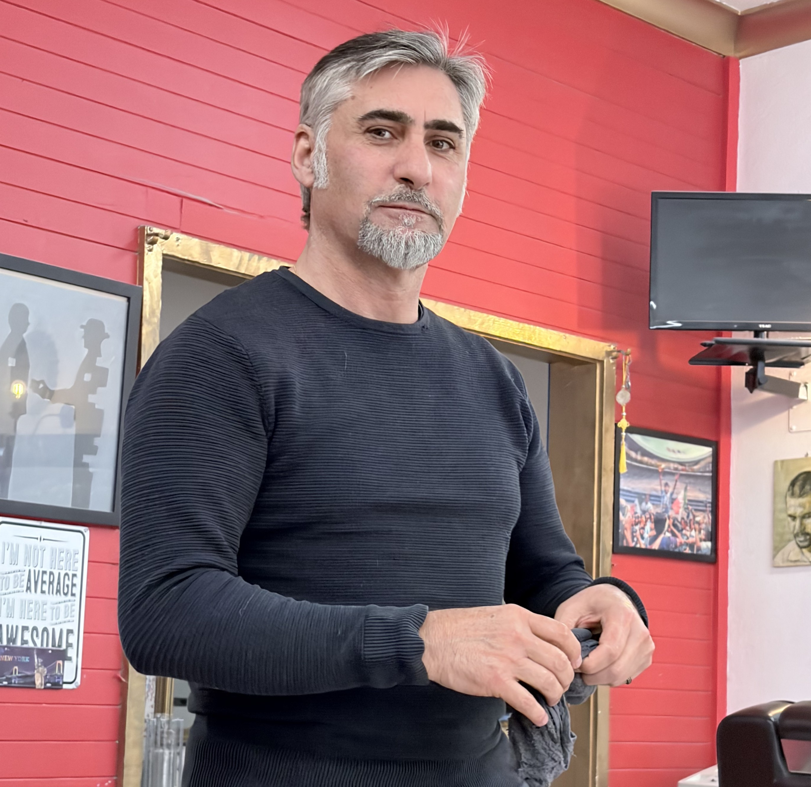

Walk-ins welcome. No bookings required. Located in the heart of East Brunswick.
VIEW OUR GALLERY
Located in the heart of East Brunswick, 434D Lygon Barber Shop has been delivering quality haircuts, sharp fades, and genuine old-school barber shop service for over 20 years. Built on great conversation, attention to detail, and a welcoming atmosphere, Nameer has created more than just a barber shop - he’s built a place where clients feel at home.
Whether you’re after a clean skin fade, beard trim, or a timeless classic cut, every client is treated like family and every haircut is completed with precision and care. At 434D Lygon Barber Shop, it’s not just about the haircut - it’s about the experience.
Men's Haircuts
Kids' Haircuts
Skin Fade / Taper Fades
Buzz Cut
Scissor Cut
Hair Wash
Hair Styling
Beard Trim
Beard Shaping
Beard Line-Up
Hot Towel Shave
Traditional Razor Shave
Neck Shave
Hairline / Edge-Up
Eyebrow Trimming
Ear and Nose Hair Waxing / Trimming
Face Clean-Up
“If you’re looking for a place to get a great cut with a good conversation then this is the perfect place to go. Its a great experience and Nameer managed to cut my extremely curly hair fairly well. Will surely be back.”
★★★★★
AMIR ABDUL
“I've been getting my hair cut with Nameer for three years. It's always a pleasure stepping into his shop, Nameer is always welcoming. Hair cuts are always on point, you can't go wrong. Thanks Nameer!”
★★★★★
GEORGE C
“I have been coming to Nameer for about 5 years now, always happy with my cuts and appreciate his skill as a barber and great conversation. Would highly recommend, very affordable!”
★★★★★
RIMU MANNION
“There’s a reason this place gets such high reviews. Nameer does an excellent job every time I’m in and keeps the vibes high. Has been my regular barber the last 6 months and now can’t see myself going anywhere else.”
★★★★★
JOSH JAY
“An amazing haircut (and beard!) guaranteed. Nameer is incredibly friendly and the shop has a great atmosphere. I look forward to each visit”
★★★★★
AARON CAPON
“Came across this gem by accident two years ago and have not been anywhere since. Nameer is more than a barber, he becomes your friend too. Professional, quick haircuts with always great conversation.”
★★★★★
NICK M
“Don't look any further for a barber - wherever you are in Melbourne it is worth going to see Nameer. He is hands-down the best barber I have ever been to. The cost of a haircut is great value for money. And Nameer is an outstanding individual - friendly, generous - he makes me a coffee every time I visit - and a great conversationalist. Once you have been there once you will keep going back - guaranteed!”
★★★★★
DAVID PATERSON
“To quote Nameer “This shop is like United Nations.. but we don’t fight, everyone get along just fine”. To me it feels like a second home and Nameer is a brother from another mother. Warm convos and awesome hair cut is guaranteed.”
★★★★★
TOLGA TUMAY
“I've been coming here for about a year and it's my favourite hairdresser in the area. The service is always outstanding, the owner is one of the nicest, welcoming guys I've ever met. On a busy Saturday the atmosphere in the shop is really fun with alot of guys from all walks of life just chatting waiting to get their hair cut. Prices are cheap and once your in the hair it's quick.”
★★★★★
NICHOLLAS SCOTT
434D Lygon St, Brunswick East VIC 3057